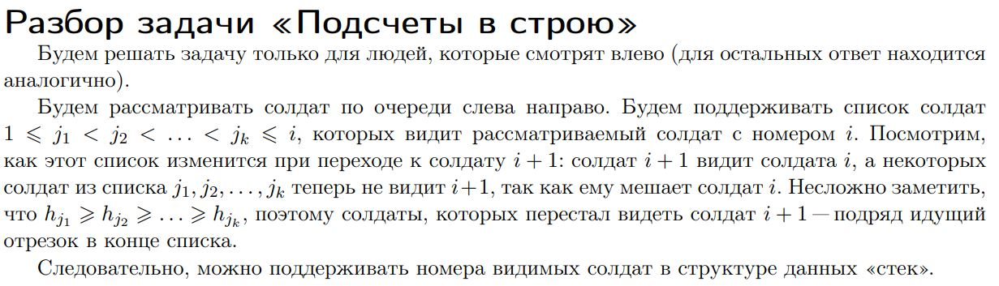

AlgoHome
Убедитесь что вы знаете все, что будет перечисленно далее. Если это не так изучите в самом срочном порядке. Гуглите, ищите, кф'те.
Приоритетная очередь, сеты, мультисеты, map'ы, все это с приставкой unordered (unordered_set и т.д.). (работа с итераторами!!, upper_bound и lower_bound).
Заостряю внимание, что если вы используете upb или lwb в сете, мст или мп вы пишите: st.upper_bound(). Если сделаете как в массивах время скорее всего превратится в линейное.
В массиве же upper_bound(a.begin(),a.end(),x).
Для сортировки векторов по "своим правилам" существуют компараторы. В начале их написание может вызвать много вопросов, но со временем все станет понятно. Стоить запомнить одно правило. Компаратор возвращает то, как должно быть в итоге. Объясню. Допустим, есть вектор структур и нужно отсортировать его по убыванию третьего элемента.
struct st{
int first, second, third;
};
bool cmp(st &a, st &b) { // не забывайте ссылки!!
return a.third > b.third;
}
int main(){
vector<st> v;
sort(v.begin(),v.end(),cmp);
}
Так как требуется отсортировать по убыванию третьего элемента, то чем раньше элемент в массиве, тем он должен быть больше. Соответственно a.third > b.third.
Стоит также узнать про кастомные правила сортировок сетов, мэпов, мультисетов и т.д. В случае если вы их не знаете, иногда сможет помочь использование элементов со знаком "-". Таким образом сортируя по возрастанию сет расположит примерно таким образом -5 -2 -1. И убирая минус при обработке вы получите последовательность 5 2 1. Лушче конечно узнать как писать кастомные правила сортировки.
Есть курс на КФ'е
ios_base::sync_with_stdio(false);
cin.tie(0);
cout.tie(0);Это быстрый ввод\вывод, его можно писать абсолютно во всех задачах, при больших вводах или выводах он значительно уменьшит время выполнения задачи.
Используйте \n вместо endl, это также значительно уменьшает время выполнения программы.
Использование двух этих моментов может ускорить вашу задачу до 10 раз.
Что касается интерактивных задач, то часто в условиях пишут про какой то fflush(). Лично я никогда его не использовал, потому что в интерактивных задачах пишу endl, вместо \n. Суть в том, что endl уже содержит в себе fflush(). Поэтому fflush() нужен только при \n. При этом в обоих случаях совершенно спокойно можно использовать быстрый ввод\вывод.
Это очень популярный момент во многих задачах, в основном он применяется в случаях когда значения данных чисел от 1 до 1e9, но мы хотели бы хранить информацию о каждом в ячейке массива. Идея: каждому различному входному числу сопоставим какое то другое число(так что все сопоставленные тоже будут различными), желательно чтобы оно было как можно меньше.
Объяснение на примере задачиvector<int> a(n);
sort(a.begin(),a.end());
map<int,int> mp; // mp[i] - показывает наш новый индекс для числа i
vector<int> backmp; // backmp[i] - по новому индексу возвращает исходное число
for(int i=0;i<int(a.size());i++) {
if (i==0 || a[i]!=a[i-1]) {
mp[a[i]] = mp.size();
backmp.push_back(a[i]);
}
}За место map иногда возможно использовать unordered_map, но если автор тестов захочет завалить анордред - он это сделает.
Часто используется вместе с другими структурами данных: ДО, Фенвик и тд.
Стоит понять как это работает, потому что используется повсеместно как вспомогательная часть задачи, без которой она пройдет не на все тесты. Этим любят усложнять задачи в олимпиадах, где есть частичные баллы.
Позволяет делать ровно то, что описывает задача D.
Пример на задаче D из списка задач:
| Задача | Примечание/Подсказки | Решение |
|---|---|---|
| Всесиб Финал 15-16 А |
|
|
| Informatics №1255 |
|
My solution |
| CF 1700C |
|
|
| Задача D |
|
My solution |